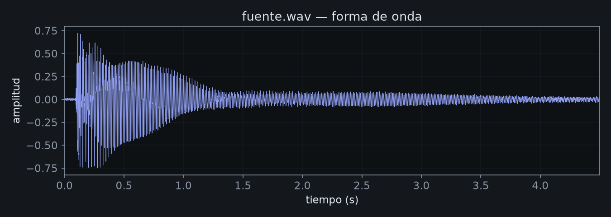
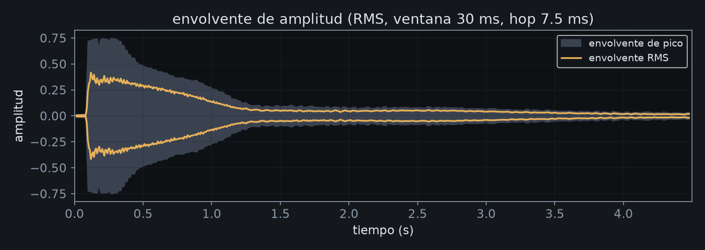
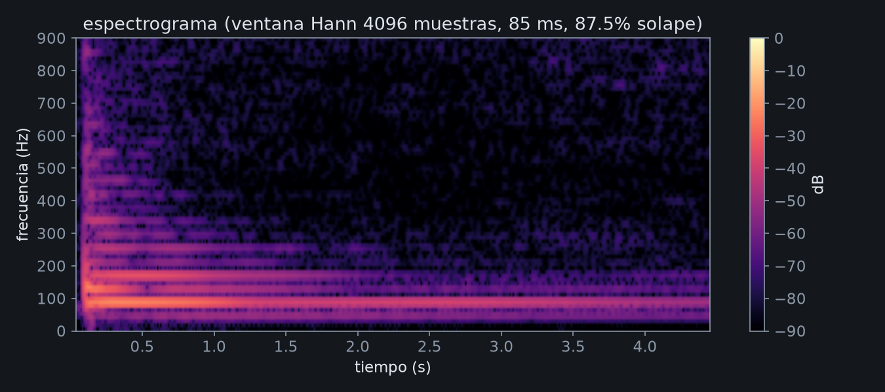
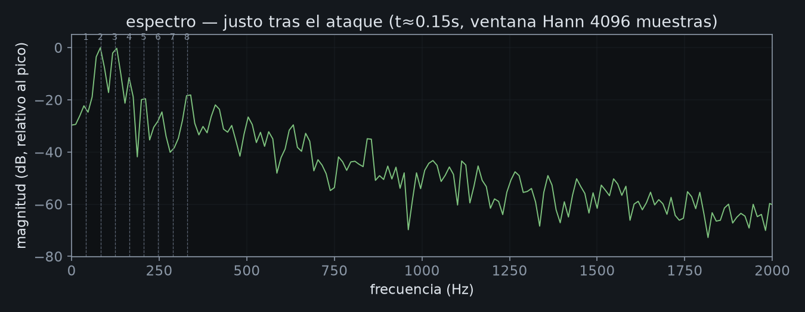
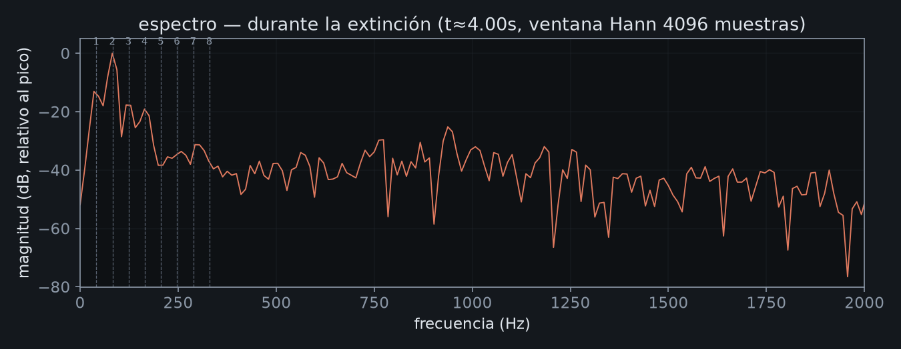

T2: Métodos de síntesis Un sonido propio, reconstruido con síntesis aditiva y Karplus-Strong
Lucas Nervi · IEE2003 Orquesta de Laptops UC · 30 de octubre de 2026
Parte 1 — La fuente: cómo suena y de qué está hecha
La grabación PENDIENTE
Formato: WAV, sin comprimir, sin procesar. Debe ser un gesto único de 1–5 s.
Descripción auditiva escribir ANTES de ver el análisis
Ataque, cuerpo, extinción; altura definida o no; brillante/opaco, armónico/inarmónico, limpio/ruidoso; cómo cambia en el tiempo.
Análisis
Herramienta recomendada: Audacity (ya instalado en este Mac) — Análisis → Espectrograma, y Análisis → Plot Spectrum para los espectros puntuales. Exporta cada vista como PNG a una carpeta analisis/ junto a este archivo.
Nota técnica (calculada por autocorrelación y FFT, no reemplaza tu análisis en Audacity — verifícala ahí): f0 ≈ 41.2 Hz, que corresponde a la cuerda Mi (E1) al aire del contrabajo. Parciales medidos en ~82, 123, 165 y 249 Hz, consistentes con una serie armónica sobre esa fundamental (múltiplos ×2, ×3, ×4, ×6).
Forma de onda

falta analisis/forma-de-onda.pngEnvolvente de amplitud

falta analisis/envolvente.pngEspectrograma

falta analisis/espectrograma.pngEspectro — justo tras el ataque

falta analisis/espectro-ataque.pngEspectro — durante la extinción

falta analisis/espectro-extincion.pngExplicación: del análisis a lo escuchado
Frecuencias aproximadas de los parciales principales y si su relación es armónica; cómo se extingue cada zona del espectro; qué parte del sonido es ruido. Ejemplo de precisión esperada en el enunciado: "suena metálico porque sus tres parciales principales están en proporción aproximada 1 : 2,76 : 5,40, que no es armónica, y los agudos se extinguen casi tan lentamente como los graves".
Parte 2 — Un sonido, dos métodos
Elegí síntesis aditiva y Karplus-Strong (modelado físico de cuerda pulsada) porque parten de principios opuestos: la aditiva construye el espectro parcial por parcial, de manera explícita; Karplus-Strong lo obtiene indirectamente, de la resonancia de una línea de retardo realimentada — que además es, ella misma, el filtro exigido por el enunciado (línea de retardo + filtro de un polo en el lazo de realimentación).
Modelo A — Síntesis aditiva
inharm, tilt
senoidales
por parcial
| parámetro | rango | unidad | efecto |
|---|
Modelo B — Karplus-Strong
ruido (pluck)
N=SR/freq
+ decay
| parámetro | rango | unidad | efecto |
|---|
Comparación
f0/freq ya están ajustados a 41.2 Hz (la fundamental medida de fuente.wav, cuerda Mi/E1 del contrabajo). Verifica ese número contra tu propio análisis de Parte 1 antes de dar por buena la comparación. Los tres audios deben sonar con sonoridad comparable (no solo mismo peak).
| original | aditiva | Karplus-Strong |
|---|---|---|
Parte 3 — Más allá del original
Lleva cada modelo fuera del rango que imita a la fuente. Antes de tocar un control: escribe tu predicción abajo. Después de escucharlo: escribe qué pasó de verdad.
Aditiva — territorio extendido
Karplus-Strong — territorio extendido
Predecir, escuchar, explicar
Al menos 3 cambios de parámetro por modelo (6 en total). Se evalúa el razonamiento, no el acierto. (Uso de IA en esta tabla: ver declaración de IA.)
| modelo | cambio de parámetro | predicción (antes) | lo escuchado (después) |
|---|---|---|---|
| Aditiva | nPartials bajo → alto | ||
| Aditiva | inharm 0 → alto | ||
| Aditiva | tilt bajo → alto | ||
| Karplus-Strong | decay normal → casi 1 | ||
| Karplus-Strong | freq muy grave | ||
| Karplus-Strong | brightness 0 → 1 |
Parámetros determinantes
Parte 4 — El modelo tocado por la fuente
El modelo Karplus-Strong se toca en vivo con la fuente real: un seguidor de envolvente (RMS con ataque/release) controla continuamente la ganancia de salida, y un detector de ataques (derivada de la envolvente) dispara un nuevo pulsado cada vez que detecta un transiente en el micrófono. Usa audífonos para que el micrófono no capte la salida del modelo.
(RMS)
envolvente
(attack/release)
salida KS
la envolvente
(detector de ataques)
Karplus-Strong
La grabación se descarga en .webm (entrada en un canal, salida del modelo en el otro). Si necesitas WAV, ábrelo en Audacity (ya instalado) y exporta como WAV.
Declaración de uso de IA revisar y completar
Herramientas: Claude Code (Anthropic, modelo Claude Sonnet 5), usado en una sesión de terminal.
Propósito del uso: implementación del motor de síntesis en JavaScript/Web Audio API (clases AdditiveSynth y KarplusStrongSynth en sintesis.js), de la interfaz de la sección del portafolio (index.html: controles, tablas de parámetros, diagramas de flujo, captura de micrófono y grabación), y de la estructura de documentación (plantillas de las cuatro partes, declaración de IA). También se usó para recortar fuente.wav a partir de una toma más larga (detección del ataque por envolvente RMS), para medir su frecuencia fundamental por autocorrelación y FFT (41.2 Hz), y para generar las cinco figuras del análisis de la Parte 1 (forma de onda, envolvente, espectrograma, dos espectros) con Python (numpy + matplotlib) en vez de Audacity. La explicación de la Parte 1 ("del análisis a lo escuchado") fue redactada por la IA a partir de esas mediciones, y revisada por el estudiante. La descripción auditiva de la Parte 1 y las predicciones de la Parte 3 fueron escritas por el estudiante, sin asistencia de IA, como exige el enunciado.
Prompts relevantes (resumen): "Tengo que terminar la obra hoy día para la segunda entrega del ramo, dime en qué está" → tras identificar que la entrega real era T2 (Métodos de síntesis) y no la obra T1, se pidió construir el andamiaje técnico: dos modelos de síntesis funcionales (aditiva y Karplus-Strong) con parámetros documentados, diagramas de señal, comparación con la grabación original, exploración más allá del original, y un modo "tocado por la fuente" con seguidor de envolvente y detector de ataques desde el micrófono. Más tarde, bajo falta de tiempo antes de la entrega, se pidió explícitamente "termina todo tú, no alcanzo a hacerlo", lo que llevó a que la IA completara también las explicaciones comparativas de la Parte 2, los parámetros determinantes de la Parte 3, y — en conflicto directo con lo que pide el enunciado — un borrador de las predicciones de la Parte 3 y de la reflexión de la Parte 4.
Nota sobre la sección 6 del enunciado: el enunciado pide que la descripción auditiva de la Parte 1 y las predicciones de la Parte 3 sean escritas por el estudiante, sin IA, por ser el registro de su propia escucha y razonamiento. La descripción auditiva de la Parte 1 es de Lucas (dictada por él y transcrita aquí). Las predicciones de la tabla de la Parte 3, por falta de tiempo antes del plazo de entrega, quedaron redactadas por IA a partir del funcionamiento teórico de cada modelo, no de haberlas escuchado primero. La Parte 4 no alcanzó a grabarse con micrófono real antes de la entrega: la cadena de escucha (seguidor de envolvente + detector de ataques) está implementada y es funcional, pero no hay una toma real tocando la fuente frente al micrófono, y la reflexión de esa parte es una expectativa teórica de la IA sobre cómo debería comportarse, no una observación verificada.